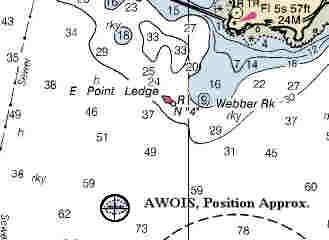

Link Index
MWDC
Home Page
Shipwrecks Page
Albert Galatin
Alice M. Colburn
Alice M.
Lawrence
Ardandhu
Barge and Crane
California
Charles S. Haight
Chelsea
City of
Salisbury
Corvan
Dixie Sword
Edward Rich
French Van
Gilder
Henry Endicott
Herbert
Herman Winter
Hilda Garston
HMCS St. Francis
James
Longstreet
John Dwight
Kershaw
Kiowa
Lackawanna
Lunet
Mars
Pemberton
Pendleton
Pinthis
Port Hunter
Pottstown
Romance
Seaconnet
Trojan
USS Grouse
USS New
Hampshire
USS Triana
USS Yankee
USS YSD
Vineyard Sound
Lightship |
Description:
Coastal tanker; Steel
Dimensions: length
- 282 ft. width
- 40 ft. depth
- 17.58 ft.
Tonnage: gross - 1546, other
-
Propulsion: Oil;
Single propeller
Machinery: (2)
General Motors Corp. 12 cylinder oil engines, with cylinder diameters of 8.5 inches and a
stroke of 10 inches.
Cargo: Empty
The Shipwreck
Date Sunk: January 10, 1977
Cause:
Foundered
Location: Gloucester, off Eastern Point
Coordinates: Latitude,
42o - 34' - 25" N Longitude,70o - 40' - 15"W
Loran:
13840.9 and 44327.8
At 6:30AM January 10th the
coastal tanker Chester Poling left Everett, Massachusetts, bound for Newington, New
Hampshire. The vessel was "in ballast", without cargo, having recently unloaded
Kerosene from Bayway, New Jersey.
Captain Charles Burgess knew it would be a rough passage, the National
Weather Service forecast 35 mph winds with seas 15-20 feet. Although his ship was 43
years old, Burgess was confident the tanker was in good working condition, having passed
its annual Coast Guard inspection each year without incident. However by late
morning the weather had worsened. Winds were nearing 50 mph and seas were building to 30
feet in height. Waves pummeled the vessels starboard bow, tossing the craft about to an
alarming degree. To give his ship greater stability in the worsening conditions Captain
Burgess flooded four of the ship's six cargo tanks with seawater.
Just before 10:30AM, within minutes of a course change which would have
put the vessel on a northwesterly heading to better meet the seas, a huge wave smashed the
tanker, breaking her in two 27 feet forward of amidship. "We were hit by a
wave, one of those big waves maybe 30 feet high" crewman Harry Selleck of
Pawtucket, R.I., on the bridge with Captain Burgess, said. "It just came in and
broke the ship in half…she caught the ship just the right way". The
force of the storm subsequently bent the bow backward until it was parallel with the
stern.
Burgess immediately radioed a distress call, which was picked up by the Coast
Guard. However, high winds at the Otis Airforce Base Coast Guard facility on
Cape Cod, delayed launch of helicopter "1438", until shortly after noon.
Meanwhile high seas drove back two of the Guard's 44 footers injuring crewman in the
attempt. Rescue would have to come from the cutters Cape George and Cape Cross,
which arrived on scene in time to see "a huge wave lift the bow [of the
Chester Poling] over the submerged part of the stern and deposit it on the other
side."
Fearing the bow would capsize at any moment Captain Burgess ordered
Selleck to abandon ship and radioed the Coast Guard of his intentions. Cape
George picked up Burgess on the first pass but crewman Selleck was forced to float on
his back to keep from drowning and spent nearly 15 minutes in the icy sea before Cape
George could maneuver close enough to effect a rescue. Just in time, for life
expectancy in the 30 degree water was not more than 20 minutes.
The remaining five members of Poling's crew were stranded on the
stern. Since the engine room was not taking on water, they did not immediately abandon
ship. Mountainous seas prevented the Coast Guard from shooting a line aboard the
half ship and it wasn't until the helicopter arrived, at 1:30PM, that a rescue basket
could be lowered to those remaining aboard.
The basket holds two men. When first lowered, John Gilmete of Jersey
City, N.J., and ships cook Joao DaRosa of Providence, R.I., climbed in. Shortly after
leaving the deck the basket dipped into a cresting wave at which point DaRosa lost his
grip and fell out. "He was with me in the basket" Gilmete said "But
when we came up he just wasn't there". Helicopter pilot Lt. Brian Wallace
believed DaRosa went into shock after striking the water and drowned.
As the stern drifted closer to the rock bound coast of Gloucester, seas
continued to pound the hull. The three remaining crewmen aboard decided to swim for it and
were rescued by the helicopter and waiting cutters.
The stern of the Chester Poling foundered within 800 yards of
Eastern Point, Gloucester.
Back to Top
Dive Site Conditions
Depth in feet: maximum - 95; minimum
- 70
Visibility in feet:
average - 15 -
20
Poling's bow came to rest upside
down in 190 feet of water 4 miles off Eastern Point. Due to it's depth it is considered a
technical dive.
Originally the stern sank in 75 feet of water off the Dog Bar
Breakwater. Mountainous seas from the Blizzard of '78 pushed the stern to its present
location. Although deeper, it is still the most popular wreck dive off Cape Ann.
The wreck sits upright on a sand / silt bottom. Sediment has built up
around the fantail, completely covering the prop. Some of the interior spaces are also
silting up including the engine room and rear storage area behind the galley. Penetration
can be made into the cavernous opening of where the ship broke in two, as well as the
vessel's cargo and ballast tanks. Many local dive shops use this wreck for shipwreck
certification and most of the area dive charter boats will take properly certified divers
to the vessel.
Marine life has turned the tanker's hull into an artificial reef. A
centerline catwalk is festooned with anemones and other hydrozoans. Caution is advised due
to the amount of monofilament and lobster lines that have snagged on the wreck.
Although considered "stripped" many fine artifacts have been
recovered including: the ships telegraph, port holes, cage lamps, the builders plaque and
most recently a whistle, found buried in the sediment below the stern.
Click on the image to go to the MapTech Map Server,
for additional navigation information. 
Back to Top
Historical Background
Constructed: year - 1934;
where - Mariners Harbor, N.Y.
builder
- United Dry Docks Inc.
Construction details:
Crew: 7
; Master: Captain Charles H. Burgess
Owners: Motor
Vessel Poling Bros. No.1 Inc.
Home or Hailing Port: New York, N.Y.
Former Name(s), date(s): Plattsburgh Socony (1934); Mobil Albany ( ? ); Chester Poling (1956)
Official number: 233334 . Country: U.S.A.
Other Comments:United
Dry Docks Inc. Hull No. 823; 1956 - Avondale Marine Ways Inc., Avondale, Louisiana,
lengthened hull 29'4" and installed a new midbody; General Motor engines built in
1944
Back to Top
Salvage
Back to Top
Sources:
Boston Globe; Eve, January 10, 1977
Boston Globe; Morning, January 11, 1977
Boston Globe; Eve, January 11, 1977
Boston Globe; Eve, January 12, 1977
Boston Globe; Morning, January 13, 1977
Boston Globe; Eve, January 13, 1977
Boston Globe; January 15, 1977
Boston Globe; January 16, 1977
Fishable Wrecks and Rockpiles; Coleman & Soares, 1989
MapTech
Mapserver
New England's Legacy of Shipwrecks; Keatts, 1988
New York Times; January 11, 1977
South Middlesex News; January 16, 1977
The Fisherman, magazine; April 14, 1988
The Record, "American Lloyds", American Bureau of Shipping; 1976
Back to Top
These files are under construction. Any
information, specifically dive site related, would be greatfully appreciated.
Send comments to: Chris Hugo
Copyright © 2000 by Christopher C. Hugo
Massachusetts Board of Underwater Archaeological Resources
All Rights Reserved
|